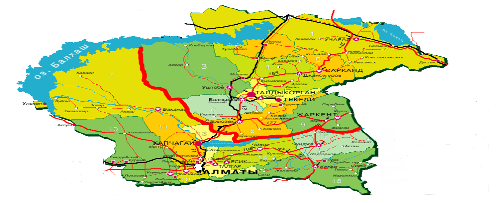
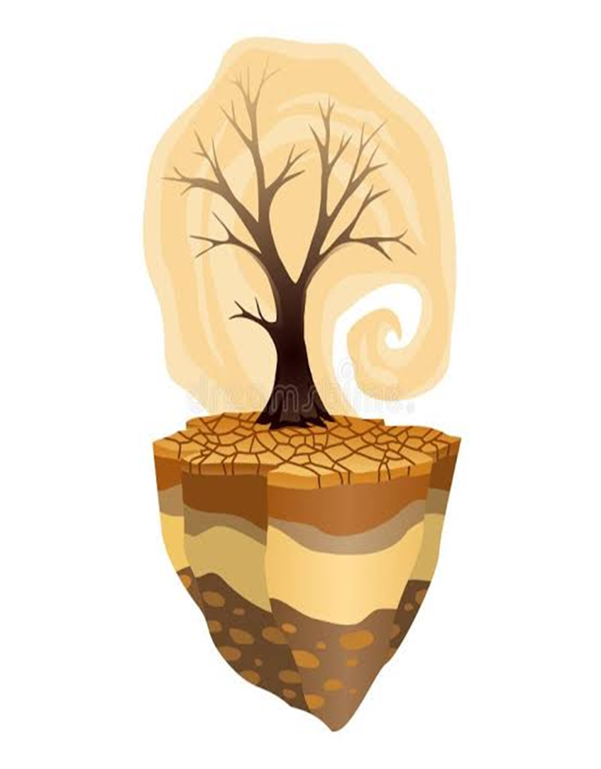

Опорные пункты наблюдений метеорологической сети
Высотный гео-профиль и орографический трансект региона
Анализ влияния высотной поясности и рельефа на температуру, осадки и параметры засух по линии от пустынного Прибалхашья до высокогорий Центрального Тянь-Шаня.
Орографический трансект: Прибалхашье (Матай, 391м) — Алматы (848м) — Тянь-Шань (Кеген, 1802м)
Сравнение высоты рельефа, температурной депрессии, градиента осадков и текущего индекса Si
Математический анализ и графики динамики засух
Многолетняя динамика параметра атмосферной засухи (Si) за 2010–2025 гг.
Пороговые уровни: Si = 1 (опасная засуха), Si = 2 (сильная экстремальная засуха)
Спектральная матрица засушливости (Год × Месяц)
[HEATMAP]Климатические нормы температуры воздуха (Таблица 1)
Теплое полугодиеЧисло случаев атмосферных засух различной интенсивности (Таблица 5)
Весенние и летниеЭкстремальные значения засухи S_max (Таблица 4)
Радарная диаграммаМатематическая модель индекса Педя и расчетный модуль
Входные метеорологические параметры
Результат расчета индекса Педя
Экономико-агрономический калькулятор ущерба и урожайности
Моделирование потерь урожая сельскохозяйственных культур при атмосферной засухе (Si) и расчет предотвращенного финансового ущерба (в тенге / ₸).
Параметры агропредприятия и культуры
Оценка финансового риска и предотвращенного ущерба
Комплекс агротехнических и природоохранных мероприятий влагосбережения
В аридных и засушливых условиях Юго-Восточного Казахстана почвенная влага является решающим фактором продуктивности сельскохозяйственных культур. Система мероприятий направлена на аккумуляцию, сохранение и рациональное использование продуктивной влаги.
Симулятор накопления почвенной влаги
Выберите комплекс запланированных агротехнических приемов для оценки совокупного эффекта влагосбережения:
Архив исходных данных исследования (Таблицы 1–7)
Полный массив климатических норм, рядов индексов засух и экстремумов
Таблица 1 – Нормы средней месячной температуры воздуха и количества осадков
| Метеорологическая станция | Климатический показатель | Апрель | Май | Июнь | Июль | Август |
|---|
Таблица 4 – Экстремальные значения параметра Si при засухах (S_max)
| Метеорологическая станция | Апрель | Май | Июнь | Июль | Август |
|---|
Таблица 5 – Число случаев с атмосферными засухами различной интенсивности
| Станция | Весенние слабые | Весенние средние | Весенние сильные | Летние слабые | Летние средние | Летние сильные |
|---|
Таблицы 6 & 7 – Повторяемость атмосферных засух по годам и месяцам теплого периода
| Месяц | Годы с засухой (Si > 0) | Годы с опасной засухой (Si > 1) |
|---|
Методологические основы и научные результаты
Физико-географическая карта полигона исследования

Первоисточник (слайд №5): Орографическая схема региона и размещение станций
Проявление атмосферной засухи в агроландшафтах

Первоисточник (слайд №7): Иссушение пахотного слоя и деградация растительного покрова